Propofol TCI — Effect-Site Targeting · 7 Illustrative Patients · 834-Patient Adult Cohort · 3 PK Models
Propofol TCI targets drug concentration at the brain (effect site, Ce) rather than in blood (Cp). Because the brain-plasma equilibration lag (ke0) varies substantially with model and patient, the choice of PK model directly determines the induction bolus, peak time, maintenance rate, and wake-up profile. This report compares three adult PK models — Marsh, Schnider, and Eleveld — across a set of clinical scenarios using the STANPUMP effect-site targeting (CET) algorithm.
The simulation includes a realistic pump constraint: rate quantised to 0.1 mL/h steps (range 0–1800 mL/h), and syringe changes that alternate between 180 s (prolonged, nurse unavailable) and 20 s (routine), starting with the longer pause.
STANPUMP operates in discrete 1-second steps using closed-form exponential recursion. Induction delivers a bolus sized to hit Ce = target exactly at the effect-site peak; maintenance switches to plasma targeting (CPT) where each second's rate is set to replace predicted Cp loss over the next second. The per-second state update:
ps[i](t+1) = ps[i](t) · exp(−λᵢ) + p_coef[i] · rate · (1 − exp(−λᵢ)) es[j](t+1) = es[j](t) · exp(−λⱼ) + e_coef[j] · rate · (1 − exp(−λⱼ)) Cp = Σ ps[i], Ce = Σ es[j]
Rate quantisation (0.1 mL/h) is applied after each CPT computation by flooring to the nearest step. This faithfully reproduces real pump behaviour and increases infusion variability (CV) relative to a continuous controller.
| Model | Reference | Central vol. | Clearance | ke0 (min⁻¹) |
|---|---|---|---|---|
| Marsh | BJA 1991 | 0.228 · BW (L) | Fixed k-rates | 0.260 |
| Schnider | Anesthesiology 1998 | Fixed 4.27 L | LBM, age, height | 0.456 |
| Eleveld | BJA 2018 | Allometric · BW | Allometric + maturation | Age/sex/weight function |
| Parameter | Value | Rationale |
|---|---|---|
| Ce target | 4 μg/mL | Standard surgical anaesthesia depth |
| Procedure duration | 90 min | Representative intermediate procedure |
| Syringe content | 50 mL × 10 mg/mL = 500 mg | Standard 1% propofol |
| Rate range | 0.1–1800 mL/h, step 0.1 mL/h | Pump hardware resolution |
| Syringe change pattern | 180 s, 20 s, 180 s, … (cyclic) | Stress-test: first change prolonged |
| STANPUMP time step | 1 s | Confirmed from SimTIVA source |
| Washout extension | Until Ce < 1.5 μg/mL | Wake-up threshold |
The alternating change pattern stresses the algorithm: the first change (180 s) occurs early in the procedure when drug burden is still building, causing a larger Ce dip than a late-procedure interruption.
| # | Sex | Age | Weight | Height | BMI | Notes |
|---|---|---|---|---|---|---|
| 1 | M | 5 yr | 18 kg | 110 cm | 14.9 | Paediatric — shown for reference only; adult models not validated |
| 2 | F | 10 yr | 30 kg | 140 cm | 15.3 | Paediatric — reference only |
| 3 | M | 20 yr | 80 kg | 180 cm | 24.7 | Reference young adult male |
| 4 | F | 20 yr | 50 kg | 150 cm | 22.2 | Reference young adult female |
| 5 | M | 40 yr | 80 kg | 180 cm | 24.7 | Age effect vs patient 3 (same BW) |
| 6 | F | 40 yr | 50 kg | 150 cm | 22.2 | Sex effect vs patient 5 |
| 7 | M | 40 yr | 120 kg | 180 cm | 37.0 | Obesity — greatest model divergence |
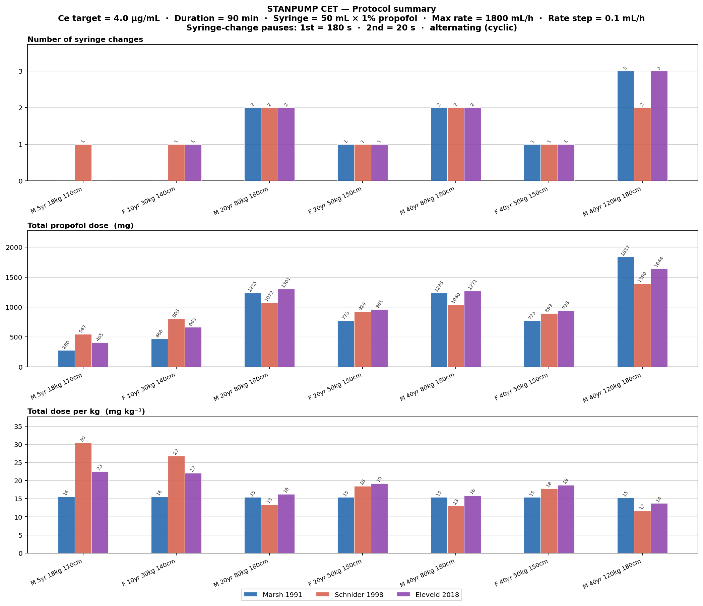
Figure 1. Protocol summary for all 7 patients × 3 adult models. Top: syringe changes. Middle: total propofol dose (mg). Bottom: dose per kg (mg kg⁻¹). Adult patients (3–7) shown; paediatric patients (1–2) included for context.
Marsh scales dose linearly with weight (flat ~15.5 mg/kg for all adults). Schnider applies LBM-based clearance and fixed Vc, under-dosing obese patients (patient 7: 11.6 mg/kg) and over-dosing lean children. Eleveld gives the highest mg/kg for young adults but a moderate obesity correction (14.0 mg/kg for patient 7) via allometric scaling — most physiologically justified.
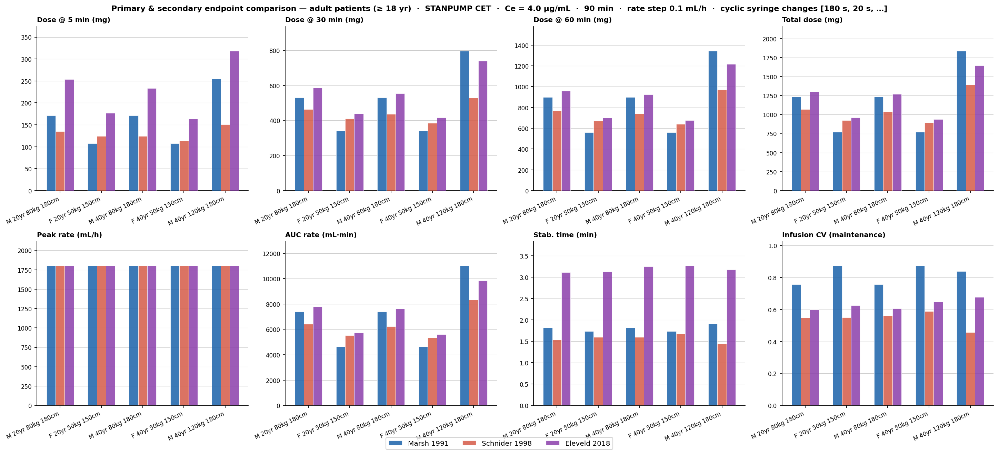
Figure 2. Eight primary endpoints across adult patients (3–7) and 3 models. Top row: cumulative doses at 5, 30, 60 min and procedure end. Bottom row: peak infusion rate, AUC of the rate curve, time to infusion stabilisation, and infusion CV. Error bars not shown — each value is a single deterministic simulation.
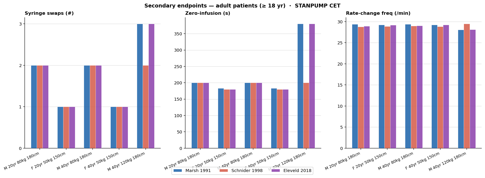
Figure 3. Secondary endpoints: syringe changes, zero-infusion duration, and rate-change frequency. Adult patients 3–7, 3 models.
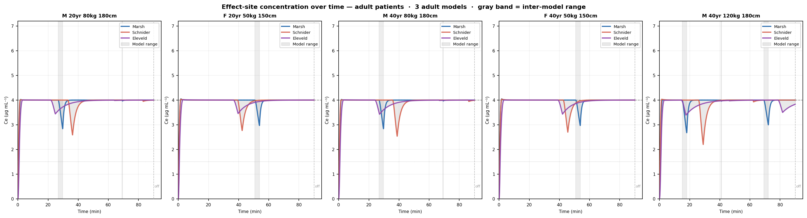
Figure 4. Effect-site concentration Ce over time for adult patients 3–7. Each colour = one model; gray band = range between highest and lowest Ce at each second. Gray shading = syringe-change pauses (using Marsh change times as reference). Dashed lines: Ce = 4 μg/mL target (upper) and 1.5 μg/mL wake-up threshold (lower).
Patient 7 (obese, 120 kg) shows the widest band throughout — Marsh, Schnider and Eleveld disagree on both the induction dose and maintenance requirements. For this patient, model selection is the clinically dominant decision.
The following panels show Ce (solid), Cp (dashed), and infusion rate (step area, right axis) for all 3 adult models overlaid. The bottom text block gives quantitative endpoint statistics per model. Dashed verticals mark syringe changes (labelled with duration in seconds). ◆ = predicted wake-up.
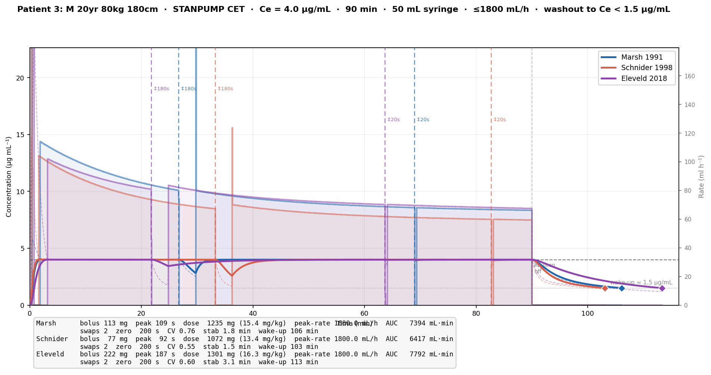
Figure 5. Patient 3 — M 20yr 80kg 180cm. 3 adult models overlaid.
Two syringe changes for all models — the first (180 s) at around 26 min causes a visible Ce dip. Eleveld requires the largest bolus (222 mg, peak 187 s) and highest total dose owing to its lower ke0; Schnider achieves the same Ce target with a smaller bolus (77 mg, peak 92 s) and saves one syringe change. Wake-up is predicted at 108–115 min across models (18–25 min post-infusion).
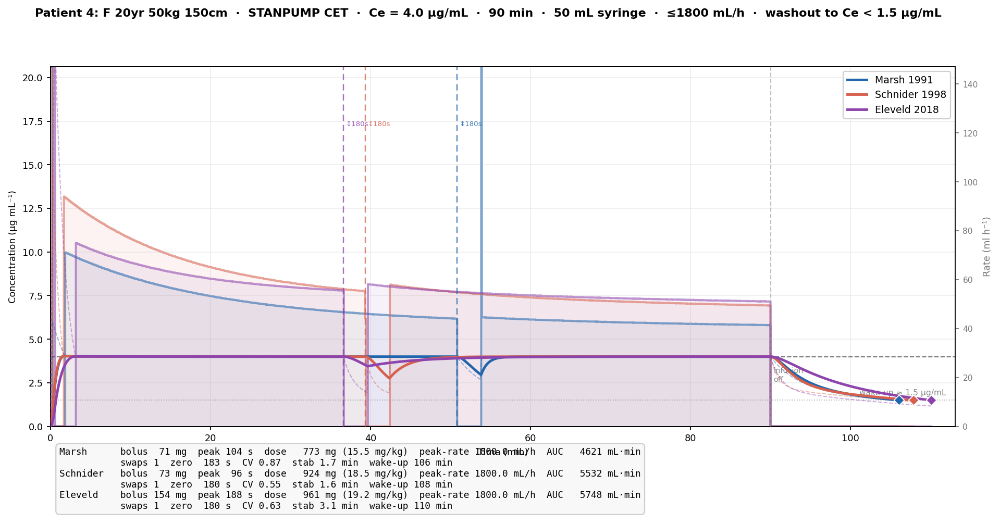
Figure 6. Patient 4 — F 20yr 50kg 150cm.
Compared to patient 3 (same age, heavier): lower weight means fewer syringe changes for all models. Eleveld's female clearance correction (CL1 ×1.17) increases dose per kg to 19.2 mg/kg vs 16.3 mg/kg for an equivalent male — the largest sex-driven divergence among the 7 patients. Schnider also accounts for sex via LBM. Marsh is sex-blind.
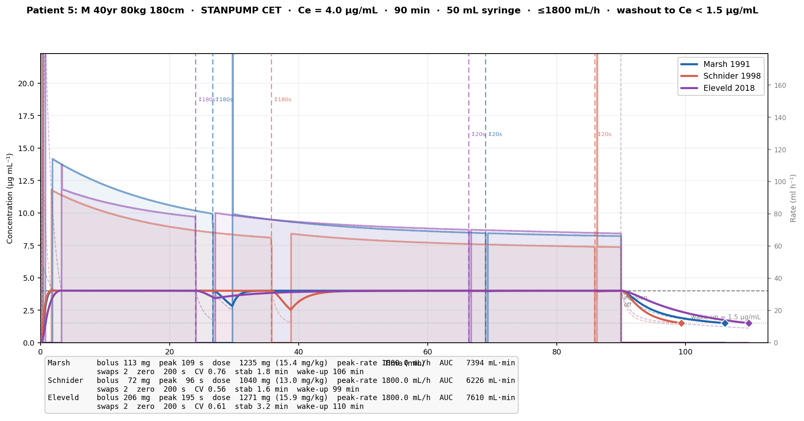
Figure 7. Patient 5 — M 40yr 80kg 180cm.
Identical weight/height to patient 3, 20 years older. Marsh is age-blind — identical results. Schnider includes age in CL1: slightly lower clearance at 40 yr, marginally higher total dose. Eleveld applies a small age-dependent CL1 decline; the difference from patient 3 is subtle at 40 yr but would widen substantially beyond 60 yr. The first 180-second change falls later than in patient 3 because drug burden builds more slowly in the older patient.
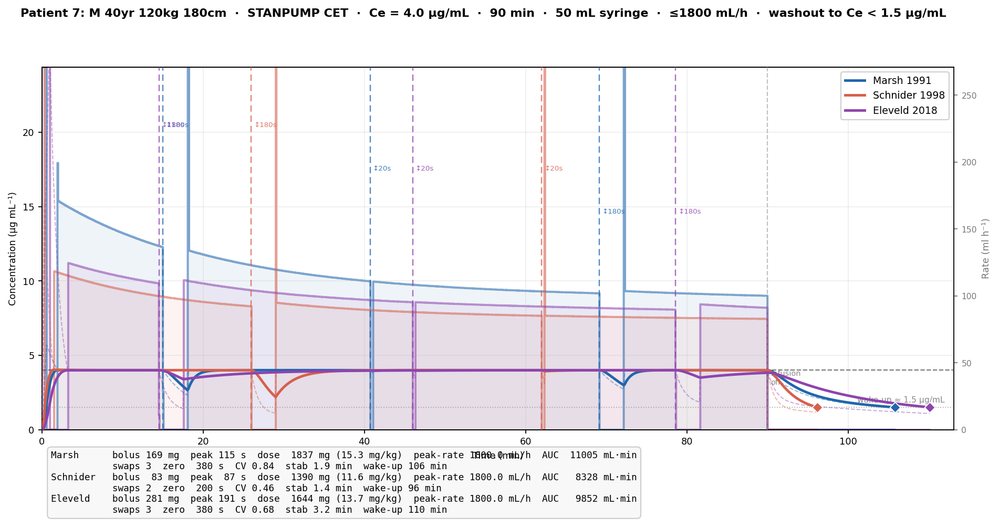
Figure 8. Patient 7 — M 40yr 120kg 180cm. Widest inter-model spread of all adults.
The full Eleveld dataset (supplementary_digital_content_1.txt) was filtered to adults (age > 18 yr), yielding 834 patients (535 male, 299 female). Each was simulated under the same protocol with all 3 models. Figures below show total dose per kg plotted against four covariates, with linear regression + 95% CI.
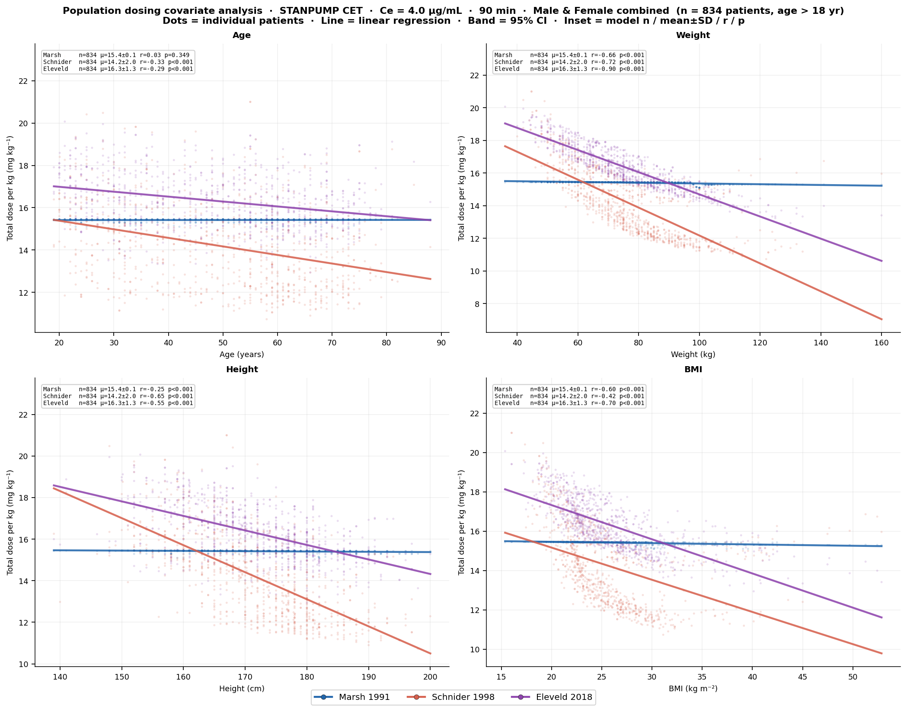
Figure 9. Dose per kg vs age, weight, height, BMI — all 834 adults, 3 models. Line = linear regression; band = 95% CI. Inset = n, mean ± SD, Pearson r, p.
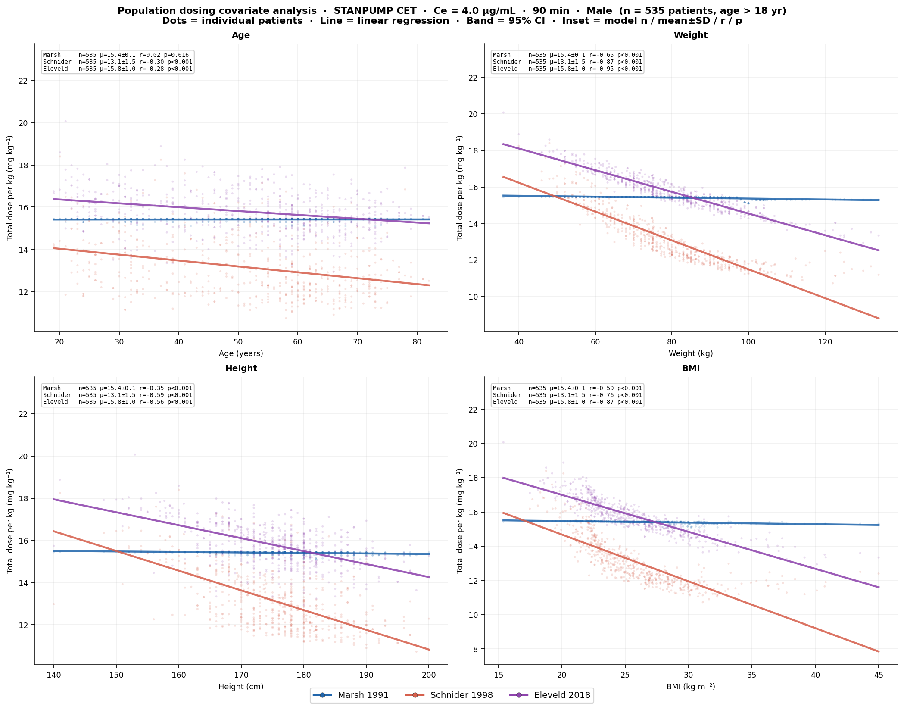
Figure 10. Male patients (n = 535).
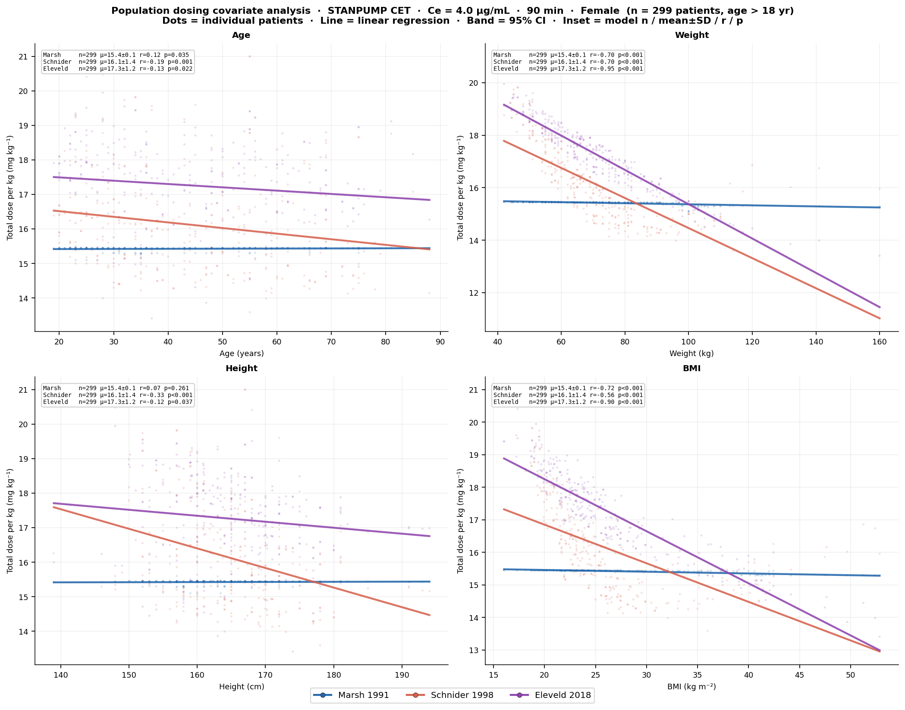
Figure 11. Female patients (n = 299).
| File | Purpose |
|---|---|
stanpump_tci.py | Core engine: cube(), calculate_udfs(), simulate_stanpump_cet(); rate quantisation; all endpoint metrics |
stanpump_scenario.py | Protocol constants (CHANGE_DURATIONS=[180,20], RATE_STEP_ML_H=0.1), 7-patient definitions, run_all() |
stanpump_plots.py | All figures: summary, per-patient, endpoint comparison, Ce divergence, covariate scatter |
patient_scenario_run.py | 834-patient batch simulation (age > 18), parallel pool, CSV export, population plots |
patient_scenario/patient_stats.csv | 2502 rows (834 × 3 models), 26 columns including all primary and secondary endpoints |
cd PKPD_Reimplementation python3 stanpump_plots.py # 7-patient figures (~10 s) python3 patient_scenario_run.py # 834-patient batch (~2 min, 11 workers)